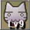
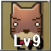
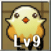
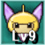
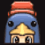

エフェメルガ

アビスフラワー

モンブラン

ガルガリオン(前半)

また、ザハール、メルセデク・コア、そしてガルガリオン(後半) は敵として認識してくれますが、どの場合もペットの攻撃ではダメージを与えられません(ガルガリオンはすごく運がいいとダメージを与えられます)。
目次 > ゲームについて > 日本Falcom 攻略 > ZWEI II > ペットについて
らんの眼
ZWEI II (ツヴァイ 2、ZWEI II Plus)
| 概要 | 情報 | 攻略チャート |
| フード交換 | ペットについて | ボス戦 |
| 敵キャラ一覧 | ハンターランク | G-コロッセオ |
| アイテム一覧 | ガジェット一覧 | トレジャー一覧 |
| ダンジョン一覧 | クリアデータ特典 | Plusの追加要素 |
| ZWEI II攻略へ | 目次へ戻る |
| ペットの特技と名前 |
| ペットはLv.3、Lv.6 になると特技を覚えます(コボルト、ペンギンは覚えません)。またLv.9(MAX) になると名前とグラフィックが変わります。 キャット：百獣の王 ドッグ：地獄の番犬 バード：ヒヨコ フェアリー：マジカルマリン カラクリ：ラグナ専用機 コボルト：勇者コボルタンX ペンギン：マユゲがりっぱ |
| ペットの経験値 |
| ペットはアイテムを拾ったり、お金を拾ったりすることで経験値が得られます。 ここで注意して欲しいのは、お金は拾った額ではなく、拾った枚数により経験値が加算されることです。 それなので、ペットを早く成長させたい場合は、なるべく主人公がお金を拾わないようにするといいでしょう。 また、ペットフードを使うという手もありますが、経験値が50 しか入らないので、後半になってくるとダンジョンに連れて行った方が早いかもしれません。逆に後半はお金があまり気味になるので、ペットフードを大量購入するのもありなのですが、愛がないですよね。 |
| 入手条件 |
| ペット | 画像 | 価格 | 入手条件 |
| キャット |  | 2500 | ペットショップ <<アントニー>> で購入 |
| ドッグ |  | 2500 | ペットショップ <<アントニー>> で購入 |
| バード |  | 2500 | ペットショップ <<アントニー>> で購入 |
| フェアリー |  | 980 | 妖精の店 <<フェアリーショップ>> で購入 |
| カラクリ | キャプテン21号の全パーツを揃え、キャプテン21号を調べる | ||
| コボルト | オルディウム神殿の「水・夢幻迷宮」の2番目のボス「ベルゼバブ」を倒す | ||
| ペンギン |  | G-コロッセオの「闘技場サバイバルモード」クリア | |
| ペット | 画像 | 価格 | 入手条件 |
| 特技一覧 |
| 特技 | ペット | 画像 | レベル | 効果 |
| じゃれつく | キャット | 3 | ||
| ねこだまし | 6 | |||
| ドッグシュート | ドッグ | 3 | 青い光の弾を撃つ | |
| ここほれ | 6 | 地面からアイテムを掘り出す | ||
| 玉子ばくだん | バード | 3 | 卵型の爆弾を置く | |
| あたまにのる | 6 | 主人公の頭に乗り、降りるときに爆弾を落とす | ||
| ヒール | フェアリー | 3 | 体力を5 回復する | |
| ふしぎな踊り | 6 | 敵の動きを止める | ||
| αアタック | カラクリ | 3 | 直線の攻撃 | |
| βアタック | 6 | 放射状の攻撃 | ||
| 特技 | ペット | 画像 | レベル | 効果 |
| 経験値表 |
| レベル | 経験値 |
| 2 | 79 |
| 3 | 296 |
| 4 | 640 |
| 5 | 1106 |
| 6 | 1690 |
| 7 | 2390 |
| 8 | 2303 |
| 9(MAX) | 4129 |
| レベル | 経験値 |
| ペットの攻撃について |
| ペットの攻撃は全てアルウェンの魔法と同じ扱いです。そのため、フェアリーの「ふしぎな踊り」が当たっただけで真ザハールの状態が変わったりします。 |
| ペットが敵と認識しないボス |
| 以下のボスは、戦闘中ペットが敵と認識してくれません。 エフェメルガ アビスフラワー モンブラン ガルガリオン(前半) また、ザハール、メルセデク・コア、そしてガルガリオン(後半) は敵として認識してくれますが、どの場合もペットの攻撃ではダメージを与えられません(ガルガリオンはすごく運がいいとダメージを与えられます)。 |
| ペンギンの行動について |
| ペンギンは他のペットと違い、敵を見つけても自動的に攻撃することはありません。しかし、主人公が攻撃する、または魔法を撃つとそれに応じてペンギンも行動を起こします。 操作キャラがラグナの場合、ペンギンはアルウェンが装備している魔法を使い、操作キャラがアルウェンの場合は通常攻撃をします。ただし、奥義を使った場合ペンギンは何もしないので注意してください。さらに、ペンギンが魔法を使用する場合、アルウェンの魔力が消費される点にも注意してください。 操作キャラがラグナの場合、攻撃と同時に魔法が使えるので戦闘の補助としては非常に有能なペットです。 |
| 概要 | 情報 | 攻略チャート |
| フード交換 | ペットについて | ボス戦 |
| 敵キャラ一覧 | ハンターランク | G-コロッセオ |
| アイテム一覧 | ガジェット一覧 | トレジャー一覧 |
| ダンジョン一覧 | クリアデータ特典 | Plusの追加要素 |
| ページの上部へ | ZWEI II 攻略へ | 目次へ戻る |